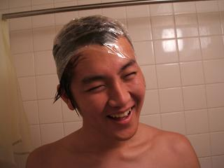
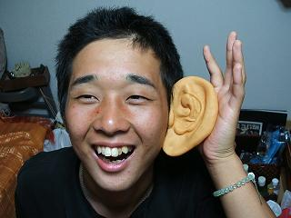
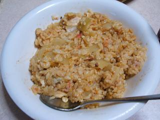
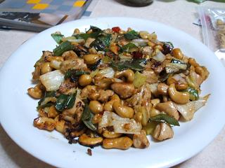
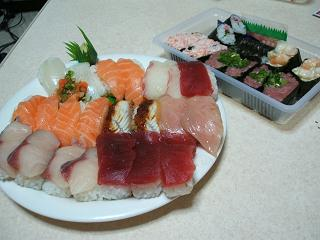

日々、想ふ
〜過去感じたことがつれづれと〜
（できるだけ最大化してお読みください）
日々、想ふ
夏の終わり。９/３０
パソコンのドライブ(CDとかDVD入れるとこ)には
昨日買ったシャカラビのDVDがずっと入っています、タケユキです。
今日は登校日、
後期の履修申請結果を受けとる日。
各学部や学科によって登校する時間が違ったんだけど
うちの学科はなんでか知らんけど１６時２０分からだった。
他のとこは１０時とか１３時とかなのになぜうちだけこんな半端な時間。
どっか遊ぶに行くこともできんじゃないか。
ぶつぶつ言いながらもそれまで家でごろごろして登校。
成績も返されるんだと思ってたら結局時間割表みたいなのをもらっただけ。
結局集まりは１６時２０分開始で１６時３０分終了。
俺の一日を返せ。
今日の一言；明日からマジメに勉強します。
宣伝。９/２９
マジで金がねえっ！タケユキです。
今日は
SHAKALA
LABBITSのアルバムの発売日(リンク先飛ぶと音楽流れます)。
ファンとして買わねばならぬ。
しかも今回のアルバムはライブの音源を収録した
臨場感をこれでもかと味わえるCDを２枚、
さらに加えて５月５日渋谷公会堂のライブ映像を収録したDVDも入った
計３枚組、それなのに値段は普通のアルバムと変わらない３０００円。
ファンでなくとも買わねばならぬ。
まあどっちだろうと俺は予約してたんだけど。
しかも予約してたのは梅田のタワレコ。
台風が迫ってて強い雨が降る中行きましたよ、
チャリこいで、電車乗って大阪マルビルにあるタワレコへ。
雨に濡れようと、風に飛ばされようと、
ファンとしてはつらくはない。
購入してから即開封。
即聴きながら帰宅しさっそくDVDをパソコンに突っ込み再生開始。
何度見てもシャカラビのライブはいい。
しかも今回のライブDVDはメンバーのオフショット映像が入ってたり
ドラムのMAH(マー)がギターに挑戦してたり、
今までとは違う一面が見れること間違いなしです。
今までを知らない人も、
「俺だってもう買ったわ！」みたいなファンも
とりあえずDVD見よう、何回でも見よう。
俺はもう１回一通り見ました。
今日あと３回くらい見ようと思います。
今日の一言：これは間違った買い物じゃない、ぜったい。
今日の家計簿：
| アルバム「BURNINIG CYLINDER」 |
３０００円 |
| 計 |
３０００円 |
免許。９/２８
免許もらってきました、タケユキです。
それにしても、大阪の免許センター、遠いわ！
なんであんなよく分からん場所に作るのか。
きれいだったけど。
どうやら
ばあどと同じ日にとってしまったみたいですな。
で、これで運転できるようになったわけですが、運転する機会がない。
実家のは保険が26歳以上らしいし。。。
なんだかんだで、激しく多忙だった夏休みも終わり、もうすぐ平穏な日々が
戻ってきます。
金欠のせいであんまり平穏じゃない気もするけど。。。
今日の日記：パクッったのはどっちだろう。
今日の家計簿：
| 交通費 |
１５４０円 |
| 昼食代 |
７４７円 |
| 免許費用 |
３８５０円 |
| 計 |
６１３７円 |
現状。９/２７
大阪です、タケユキです。
この夏休み、移動だけで終わる日が来るごとに
「あぁ暇人だなぁ、そんでもって金ないんだなぁ」
そうつくづく思ってます。
現在の貯金残高、２９００円。
おちおち遊びにも行けません。
今日の日記：シャレになりません。
今日の家計簿：
| なし |
覚えてない円 |
| 計 |
覚えてない円 |
帰省〜今度こそこの夏最後〜。９/２６
三丁目宅から更新中、タケユキです。
昼から遊びに行ったんだけど
なぜか最初に連れて行かれたところがパチンコ屋。
ハマッてるってのは前から聞いてたんだけど
まさか俺が入ることになるとは思わんかった。
金かかるね、パチスロって。
試しにちょっとやってみたんだけど千円が３分くらいで消えた。
俺はそれ以上金かけんかったけど
なんでか知らんけど
三丁目が２万くらい勝ってた。
それからボーリング行って、
ボールを同時に２個投げるっていう荒業をやってのけた、
しかもそれがストライクになった。
天才とはまさに俺のことか。
まあそんなことしてたから結局スコアはたいしたことなかったんだけど。
おなかすいたんで焼肉行った。
三丁目のおごりだった。
スロットに今週だけで４回行ってるらしい。
それでン万円買ってるっていうからすごいというか
人間的にどうかと思うというか。
まあおごってくれるとかだったら俺にとっては何も問題ありませんが。
それから近くの映画館行って「アイ・ロボット」鑑賞。
・・・・・・・・・・・・・・・・・
え〜いきなりですが眠たくなってきたので
日記の更新を
三丁目に変わります。
*******************************************************
また友達の少ないタケユキの相手をしております、三丁目です。
一週間ほど前、暇？と、連絡をうけて、忙しい中時間をさいて、
タケユキに付き合ってやりました。
彼の実家はどこなんでしょう？
今回誰に生存を知らせにきたんでしょう。
気になる人は
足跡を残してくのほうへお願いします。
この更新している最中、横のソファでは
綾乃さんが
何を思ったのかギターにチャレンジしております。
伸ばした爪まで、切って・・・どうやら本気みたいです。
このような方々のおかげでまた我が家が廃墟と化しそうです。
タケユキのページをかりて申し訳ないですが、
家事等が大好きな子！
次回タケユキが帰省するときは同伴してください。以上、代打、三丁目、出席番号１番でした。
今日のBB：１３連。
今日の家計簿：
| なし |
覚えてない円 |
| 計 |
覚えてない円 |
今年4度目〜感傷〜。９/２５
夜更新できないので朝早くに更新しました、タケユキです。
今から広島帰ります。
今回の帰省はちゃんと実家に帰る帰省です。
うちの家庭は外国に縁がない家庭なもんで
俺のタイ・カンボジア旅行がうちの家庭内初の海外旅行、
いちおう帰国報告はちゃんとしたんだけど、
親としては家族内初の海外旅行者、
しかも初めての海外にアメリカとか英語圏じゃなくて
いきなり「タイ行ってくるわ」とアジアに飛んでった息子、
そんな感じでいろいろ迷惑かけたんで
無事生きている報告をしに帰ってきます。
でも今回の帰省には今まであったような
イベントの予定はありません、
めめしいとは過去数え切れないくらいの人に言われたけど、
大学入ってから毎回の帰省の楽しみだったわけだし。
なんか大きい穴っていうか空洞ができた気持ちっていうか、
これからずっと帰省の度にこんな気持ちになるんかなぁ。
って俺は少女マンガの主人公か。
一期一会。９/２４
今月もあと少し、つまり夏休みもあと少し、タケユキです。
今日は教習所の卒業検定を受けてきました。
卒業検定っていうのは教習所で一番最後に受ける車の技能(運転)のテストです。
こういう検定はたいてい二人か三人で組になって
一つの車に乗って交代で車を運転して検定を受けることになります。
俺が車を最後に運転したのが約１ヶ月前、
今運転に自信があるかって聞かれてはいと言えるわけがありません。
ましてや大阪の荒い交通事情を切り抜ける自信などあるわけがありません。
そんな状態で知らない人と同じ車に乗って運転とかできるかっての。
そう半ばやけくそに悲観的になってたら、
同じ車で運転することになった人はなんと
この時の高校生。
あっちも俺のことを覚えててお互い「珍しいこともあるもんやね」
そんな顔してひと笑い。
顔見知りっていうことで二人ともリラックスできたかいあって
二人ともパラつく雨の中検定コースを無事走破。
走り終わってのんびり世間話しながら発表待って、二人とも無事合格。
残すは門真にある運転免許試験場での学科試験のみ。
教習所を出て駐輪場まで歩いてさよならしたら、
その高校生は歩いて帰るみたいだ、確か前は原付で来てたのに。
「今日雨だったんで電車乗って駅からバスで来たんすよ」とのこと。
すぐバスが出る時間でもなく、駅まで通り道だったんで
「駅まで乗ってきや、通り道やし」また世間話しながら駅までひとっ走り、今度はチャリだけど。
ほどなく駅に到着。
「ありがとうございました、これで門真でも会ったらおもしろいっすね」お互い名前も知らない仲のままだったけど、
こういう一日も、なかなかいい。
お兄ちゃんかお父さん。９/２３

あ、別にこの画像に何の意味もないです、
なんかパソコンのファイル整理してたら、
頭にラップ巻いた変な人の画像が出てきただけです、タケユキです。
何度もこの日記に書いてますが俺は三ツ矢サイダーが大好きです、
今日ニッショー（スーパー）で買い物してたら、
「三ツ矢スカッとりんご」っていうジュースが売ってるのを見つけました。
一人の三ツ矢サイダーファンとして、
これは買わずにはおれまいと、
通常の三ツ矢サイダー、それとこの「スカッとりんご」、
1.5Lのペットボトルで両方買いました。 さすがに一人で計3Lは飲みきれません。
でも大丈夫、今日は
さんまがうちに遊びにきてます。

夏休みに帰省して以来、約１ヶ月ぶりの再会。
あ、まだ夏休みじゃん、しかも１ヶ月ってあんまたいしたことない。
まあとりあえず久しぶりの再会なんです、
高校のときの友達に会うとどれだけ時間が経ってても
全然時間が経ってなくても久しぶりな感じがするのは俺だけじゃないはず。
晩ご飯の材料買いに行った時に三ツ矢シリーズを買ったんだけど
実は飲み物はそれだけじゃなくて、
あと牛乳１パックとりんごジュース１パック(ともに1L)買ったりしました。
あとお酒も３缶くらい。
てなわけで今日は飲み物を６Lぐらい買ってみた。
ある意味これが本当の飲み会。
今日の一言：まあもちろん飲まれましたが。
今日の家計簿：
| 材料費 |
１０００円 |
| 計 |
１０００円 |
レディースデー。９/２２
俺はカップラーメンなどの類のスープが大好きです。
でもインスタントラーメンのスープっていうのは
たいていが塩分が過剰に含まれてて体にあまりよくありません。
でもそういうのに限っておいしくて全部飲みたいもの。
小さいころ家でカップメン食べる時はよくおかんに、
「あんた汁は飲まずに捨てんさいよ！体に毒なんじゃけ」こう言われたものです。
親としては子どもの健康を思っての助言だったのであろうと、
長生きするには小さいころからの積み重ねが大事なのだろうと、
今ではそういうふうに理解ができますがそのころは、
「うっさい！これ(スープ)飲めんくらいなら死を選ぶわ！」それくらいカップメンのスープが好きだったんですね。
別に飲んだからってすぐ死ぬわけじゃないっての。
小さいころは「う〜ん俺って勇ましい」とかって思ってたけど
今ふと冷静に考えると勇ましいどころか考えが浅ましい限りです、タケユキです。
今日は映画「ヴァン・ヘルシング」を見てきました。
この映画、人間対非人間（ヴァンパイアとか狼男）だと思ってたんだけど
実際はそうじゃなかったです、詳しい話は書かないけど。
思ってたより怖い映画だった、
一人で「うわっ」とか「おおっ」とかビクッてしてた。
一人で見に行ってはないですよ？
こんな映画一人で見に行ったら帰り道が怖くてしょうがない。
今日水曜日はレディースデー、女の人が１０００円の日。
女の人だけが１０００円の日、女の人だけが。
なんか男だけ損したような気分になりました。
なんでメンズデーはないんだろう。
今日の一言：前書きの方が長かったですね。
今日の家計簿：
| 映画代 |
１５００円 |
| 晩御飯とかお酒 |
１０００円 |
| 計 |
２５００円 |
原点回帰。９/２１
約１ヶ月ぶりに教習所行ってきました、ええまだ免許取ってません。
今日は卒研前の効果測定学科試験、もちろん合格しました。
時間はかかってるものの、ストレートに進んでますよ？
一応自分のプライドのために言っておきます、タケユキです。
久しぶりに自分で料理をしました、旅行の影響もあってタイ料理。
でもタイ料理ってのは特殊な調味料をたくさん使ってたりで
忠実には再現できていません。
とりあえず雰囲気だけだしてみました。
しかも今回作った料理はタイに行った時に食べてない料理なので
完成したこの味がタイ料理と胸をはって言えるものかどうかさえ微妙です。
とにかくがんばって作ってたんでレシピ載せときます。
カーオ・パット（タイ風炒飯）

- 肉類やエビ・カニ ２００ｇ
- ニンニク 適量
- タマネギ 一つ
- タマゴ ２つ
- トマト 一つ
- ナンプラー、砂糖、塩コショウ、醤油 適量
肉類は一口大にカットしてタマネギとトマトを厚めにスライスする。みじん切りにしたニンニクを炒めて香りを出し、肉類、タマネギ、トマトの順に炒める。それからご飯を加え、また炒める。ある程度火が通ったら卵を割り入れてくずしながら混ぜ炒める。ナンプラー、砂糖、醤油、塩コショウで味を調えてできあがり。
パッ・カシュナッツ（鶏肉とカシューナッツの炒めもの）

- カシューナッツ １００ｇ
- ネギ ２本
- トウガラシ ５本くらい
- ニンニク 適量
- 塩コショウ 適量
トウガラシを大きめに輪切りにし、鶏ささみ肉はうすく一口大に切る。ネギは３ｃｍぐらい、ニンニクはみじん切りにしておく。それからニンニクを炒め、香りが出たら鶏肉を加えてさらに炒める。さらにカシューナッツを加えて手早く炒め、カリカリになったらトウガラシとネギを入れて、塩、コショウで軽く味付けして出来上がり。
今日の一言：影響されやすい男なので。
持つべきものは。９/２０
マグロさんが好きです、
でもサーモンさんのほうがも〜っと好きです、タケユキです。
高校の友達が家に遊びに来ました。
高校のときとは違い、単に学生としてではなく、
バイトという形で社会勉強を始め、
姿かたちでは分からない成長を遂げた友達、
受験という戦争の中に身を起き、
社会を知ることのなかった高校時代、
大学に入ってバイトはやって損はないというもの、
バイトをやってる友達と飲むのはいいもの、
自分の知らないその世界のちょっとした裏話が聞けたりします。
持つべきものはバイトしている友達です。
そのバイトが飲食系ならなおよいです。
回転寿司でバイトしてる友達なら最高です。
お土産に買ってきてくれました。

いやぁ、たまらんねえ。
今日の一言：サーモンむっちゃうまいすよ。
ふう。９/１９
やっと一つ書きあがりました、タケユキです。
９月上旬に行った東京観光の想ひ出、完成しました、
東京観光〜日本の首都というところ〜これからまた想ひ出書き始めるので今日の更新はこれまでです。
今日の追加内容：９/３０クラス懇談会
クラス別懇談会
| 学科 |
コース |
時間 |
場所 |
| 情報科学科 |
計算機・ソフトウェアコース |
１６：２０〜 |
I棟AV演習室 |
| 情報科学科 |
数理コース |
１０：３０〜 |
基・Ｊ棟６１７ |
| 電子物理科学科 |
物性物理学コース |
１３：００〜 |
基２０８ |
| 電子物理科学科 |
エレクトロニクスコース |
１３：００〜 |
基２０５ |
| システム科学科 |
生物工学コース |
１０：００〜 |
基３０２ |
意外に時間がかかる。９/１８
言い訳させてください、タケユキです。
この日は一日想ひ出作って午後からバイト、
まだ想ひ出完成してません、
もうちょっと、あとちょっとでできるから待ってぇぇぇぇ。
世界の遺産〜アンコール・ワット〜。９/１７
無事帰ってきました、タケユキです。
帰ってきていきなりですがバイト行ってきます。
旅行の話は今週中に全部書けたらいいなぁと思うくらい
たくさんのことがありました。
それを語るには自分の中でもう少し整理が必要みたいです、
それまではこの写真で俺の感動を少しでも共有しててもらえるとうれしいです。
ちなみに左下の白いやつ、俺です。
思ってた以上に、世界は、広い。
今日の家計簿：
| 普段の生活じゃ得られない感動 |
priceless |
| 計 |
また一つレベルが上がった |